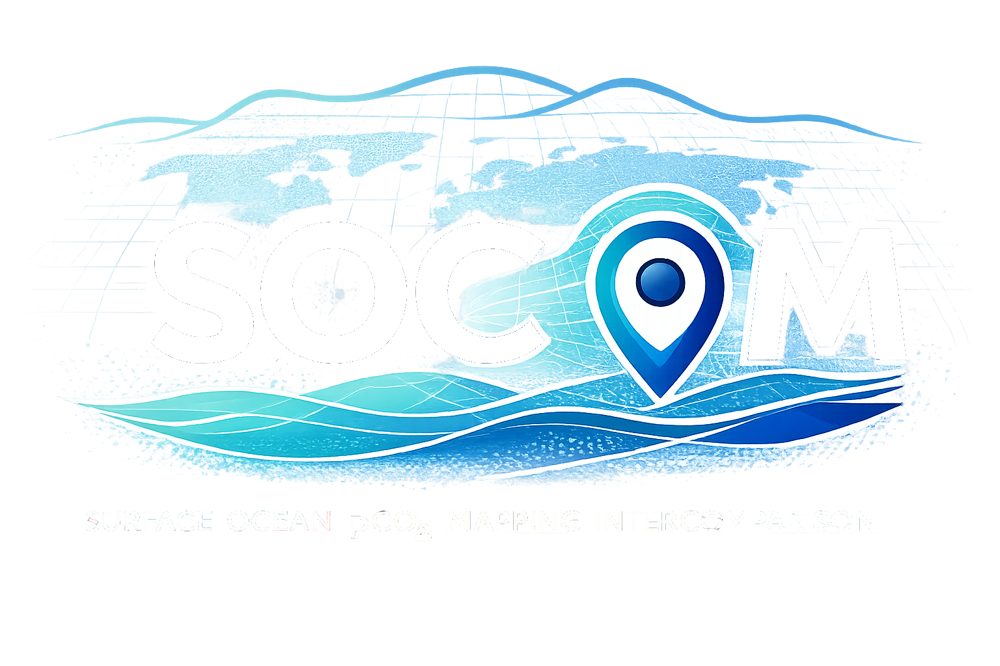

Data-based estimates of ocean carbon sink variability
An open, international initiative evaluating statistical and machine-learning methods for reconstructing the global surface ocean CO₂ field and quantifying air–sea carbon flux uncertainties.
Quantification of the sea-air CO₂ flux is possible using measurements of the oceanic and atmospheric partial pressures of CO₂ (pCO₂) in conjunction with a parameterization of the gas transfer across the sea-air interface.
Through extensive concerted community efforts, more than 10 million surface ocean pCO₂ measurements were gathered and compiled into the SOCAT and LDEO databases. However, observations from ships or fixed sensors can only cover a tiny fraction of the spatio-temporal pCO₂ field of the global surface ocean. Interpolation methods are therefore needed to estimate values in all periods and areas not directly observed.
SOCOM collates various methods proposed to interpolate pCO₂ data in space and time. These methods span a wide range of approaches. Some reproduce signals in the data more closely; others bridge data-void areas more effectively. SOCOM exploits the added value of this complementarity and fosters inter-method investigations.
SOCOM is an open intercomparison initiative. Launched in 2013 and coordinated with the Global Carbon Budget (GCB), it entered its second phase — SOCOMv2 — in 2023, introducing a rigorous multi-model, multi-method testbed. Further contributions are welcome.
The ocean absorbs ~30% of anthropogenic CO₂ per year (~3.2 ± 0.4 Pg C yr⁻¹). A model–data divergence of 0.59 Pg C yr⁻¹ persists in the GCB.
SOCAT covers ~2% of the ocean. Wintertime gaps in the Southern Ocean can bias flux trend estimates by 50–130%.
Combining nine methods reduces the global mean bias to −0.06 µatm through compensation of opposing errors.
All groups producing surface ocean CO₂ reconstructions are invited to participate and contribute.
SOCOMv2 — six coordinated experiments